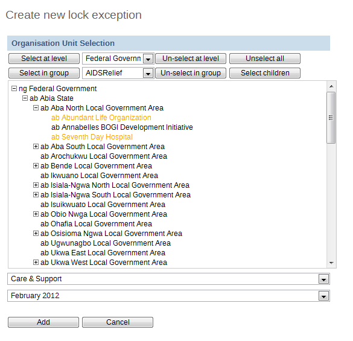

Lock exceptions provide fine-grained control over exemption from a locked data set. After the expiry of the data set, data entry will be denied by default, unless an exception has been granted through the Lock exception interface. To enable a lock exception, select the desired organization units, data sets, and time period and press "Add". By granting a lock exception, data entry will be enabled even after the expiry period of the data set has passed.
|  |
In the example above, a data lock exception would be created for "ab Abundant Life Organization" and "ab Seventh Day Hospital" for the "Care and Support" dataset for "February 2012".